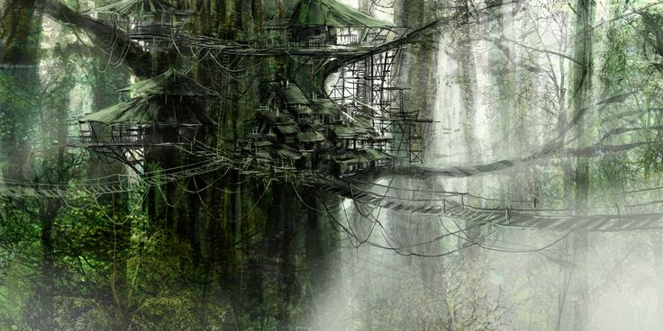
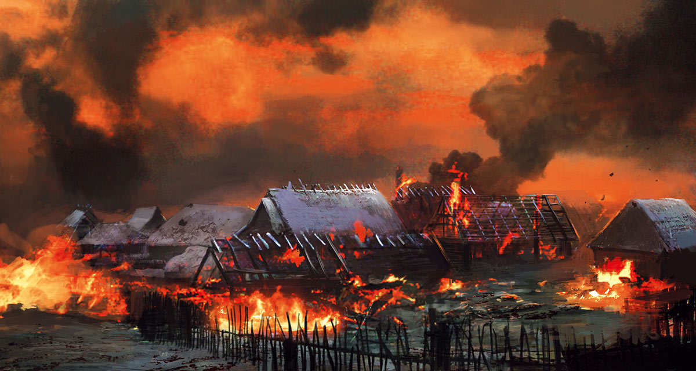
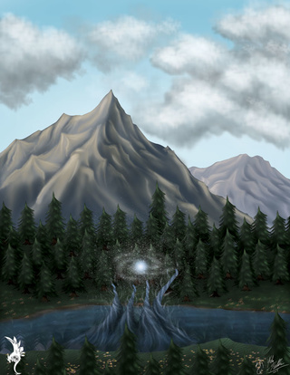

Government
Chieftdom - The Squirrel government is run by a Koho (chief) who has been choosen by the Senken-sha. The Senken-sha is a spiritual conduit for all of the spirits in Kobito and channels them during all her waking hours. Once the Senken-sha has choosen the Koho-Sha (chief candidate), the Koho-Sha will set out on a KaHa-Ka (spiritual journey) where he alone must travel Kobito's forests and kill a great beast. If he succedes and brings back his quarry, he will become the TenoKoho (chief in waiting) and will take a new name based on the quarry he procured. He will take the place of the Koho when the Koho dies, becomes dishonnored, or joins the Choro-Sha (elders).
Terrain
Kobito is considered by many a mice to be an enchanted forest. The undergrowth is so thick it is very hard to move quickly through it and document. The squirels of Kobito are another reason that much of the Kobito is surrouded in mystery. Fiercely territorial, the Kobito squirrels permit few outsiders into their sacred forests. Those that traders that are permit are blindfolded and lead to their capital city, Rakun, in order to bring outside trade to their people.
Common Wildlife
Squirrels - Sleak, nimble and quick are squirrels. Being a head taller then amouse, squirrels can take on 2 mice if they are equal fighters. Since they live 3 times as long though, they are often much more skilled in their chosen method of fighting. They are one with nature, but also take much honor in their method of war.
Owls
Hawks
Snakes
Lizards
Skunks
Areas of Note
Rakun - The capital city of the Squirrels. Here is where the Choro-Sha have their home and advise the current Koho. The city is built into the tall trees of Kobito and has rope bridges between the major city centers that are built into each tree. The few mice that have been to it have declared it as one of the great wonders of the world.

Maormer - The Fallen city. Once protected from the squirels of Kobito by the Skiapache Range, the former mouse city of Maormer has fallen to the squirrels. Once the Squirrels were provoked by the mice of Hojo, they set about elimating such a threat from the west in 936 AT. They captured and enslaved the mice. They now use the city as a port to trade their spiritual wood relics and weapons to Oak Island.

Sha i'a Nde / Chuni Lake - The Holy Lake. Sha i'a Nde as called by the squirrels of Kobito is a sacred lake used to commune with spirits that reside in it. These waters are used by the Miki-Seishin to first learn to control the spirits of water. These water spirits are used for their healing powers as well as their ability to defend. On the banks of Tcho'Kana, Sha i'a Nde is also a natural border to protect the squirrels from the rats of Raten.

Other Regions
Home